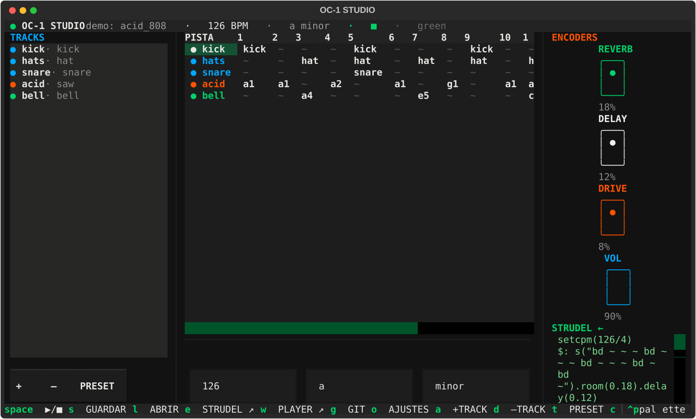

secuenciador · strudel · ableton · chiptune
La terminal es tu nuevo instrumento
OC-1 STUDIO es un estudio de música con estética Teenage Engineering y Arturia que vive en tu terminal: secuenciador de 16 pasos, encoders que se giran, sonido de computadora vieja y tus demos como archivos .py versionados con git. Hecho con IA — la música la pones tú.
Características
Seis ideas que hacen de OC-1 un estudio de verdad. Pulsa 🔊 para escuchar cada una.
Demo · el secuenciador
Un secuenciador de 16 pasos como el de OC-1, sonando con síntesis del navegador. Toca las casillas.

Encoders
gíralos con la rueda, arrastrando o con ←/→ · el VOL controla de verdad el demo
Instalar · dos minutos
Pega estas líneas en tu Terminal (macOS/Linux) o PowerShell (Windows). Requisito único: Python 3.10+.
$ git clone https://github.com/Lott-Campuzano/oc1-studio.git
$ cd oc1-studio
$ python3 -m venv .venv && .venv/bin/pip install -e .
$ .venv/bin/oc1studio
dentro de la app: ESPACIO suena el demo · T presets · C color ·
V ableton · G git · O ajustes · Q salir
¿nunca has tocado una terminal? lee la
guía para principiantes.
Ableton + Max for Live
OC-1 secuencia; Ableton suena. Se hablan por dentro de tu máquina — sin nube, sin servidores.
OC-1 STUDIO ──udp:7647──▶ Max for Live ──▶ midiout ──▶ Ableton ▲ │ transport └────udp:7648 · reloj 1/16 ◀┘ sincronizado con el play de Live
max/oc1-studio-bridge.maxpat en el patcher